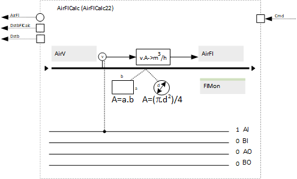
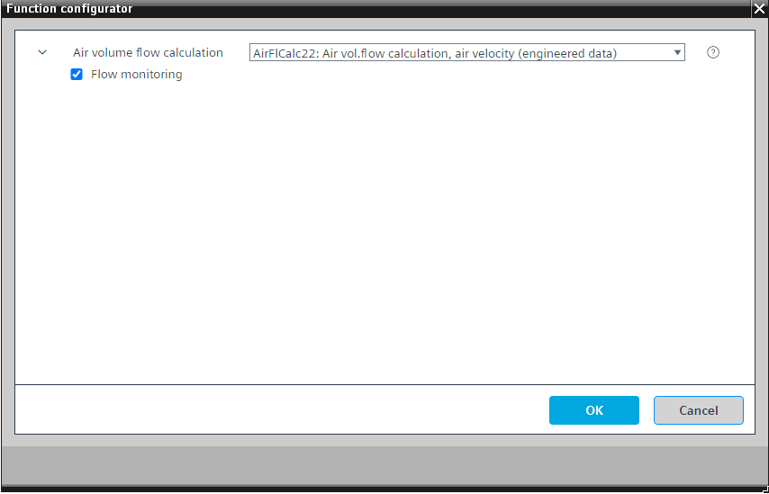

[AirFlCalc22] Air volume flow calculation, as a function of air velocity
Program block, name / node subtype: [AirFlCalc22] Air volume flow calculation, as a function of air velocity
Library hierarchy: Ventilation and air conditioning equipment
Family: AirFlCalc
Project tree | Diagram |
|---|---|
 |
Configurator


Program blocks are stored in the library without I/Os. Use the auto-create and auto-connect functions to create I/Os and/or to connect them to the interface blocks, e.g., R_A, CMD_B. Alternatively, take the I/Os from the folder containing the predefined I/Os in the library and/or from the plant and connect them to the interface blocks.
Function
Calculates the air volume flow as a function of the air velocity. Multiplies the air velocity by the area of the duct.
This function is an alternative to AirFlCalc21 and is used mainly for calculating the volume flow for a VAV with internal control and a large duct size.
This function is prepared for square or round ducts.
A calculated value object displays the air volume flow in m3/h. If an air volume flow in l/s is required, divide the value by 3.6. A block is prepared in the program. Connect the calculated value to it and set its unit.
Optional functions
This program block has the following optional functions:
Option: Flow monitoring
A monitoring event is generated if the pressure doesn't increase within a specified period.
Mandatory elements
Name | Description | Type | Alarm / Notification class | Trend / Type |
|---|---|---|---|---|
|
AirV | Air velocity | AI: Analog input | No | Yes, 2 |
AirFl | Air volume flow | ACalcVal: Analog calculated value | No | Yes, 2 |
Optional elements
Name | Description | Type | Alarm / Notification class | Trend / Type |
|---|---|---|---|---|
|
FlMon | Flow monitoring | BCalcVal: Binary calculated value | Yes, 4 | No |